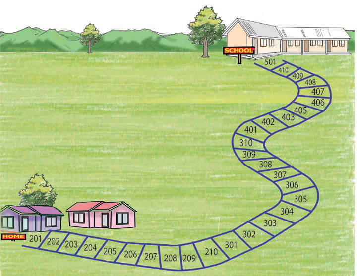

Activity 2
Let us play a home-to-school game.
The game is played by using a die, a cup or a tin, and a marble.
The following picture shows this game.

Steps
1.
Play in pairs.
2.
Use a cup or a tin.
3.
Put a die in a cup or in a tin.
4.
Each player must have a marble of different colour for identification.
5.
Roll the die in the cup or tin.
6.
Count the number of dots shown on the top face of the die.
7.
Move your marble in the direction of the school as the picture shows.
8.
The marble is moved in steps equal to the number of dots on a die.
9.
The first person to reach school will be the winner.